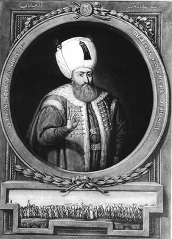

Mumyalı Sultanlar
Mumyanın Mısırlılara özgü olduğunu sanırız. Oysa belgeler Selçuklu ve Osmanlı’da bu uygulamanın olduğunu hatta, Fatih, Kanuni, Yıldırım Bayezid ve 1.Murad’ın bile mumyalandığını gösteriyor.
Tarihimiz gizemlerle dolu. Her an bizi şaşırtacak, belki de sahip olduğumuz tarih bilgisini yeniden gözden geçirmemize yol açacak bir bilgiyle veya bilinmesine rağmen üzerinde durulmamış bir olguyla karşılaşıyoruz. Doğrusu, ecdadımıza dair her bilgi bize bizden bir şey katıyor, yeni ünsiyet noktaları sağlıyor; bazen de beklenmedik kültürel şoklara yol açıyor. “Mumya” ve “Osmanlı” kelimeleri yanyana geldiğinde olduğu gibi...
Mumyalama olayı daha çok eski Mısır’da tanrılık iddiası içindeki firavunlara atfedilir. Oysa artık “mumya”nın şu anda sahip olduğumuz kültürel değerler içinde bize hiç de “yabancı” bir yerde durmadığını biliyoruz.
Evet, Mısır’a ait bir gelenek olarak bildiğimiz mumya bizim de gerçeğimiz. Kaynaklar ise tarihe ilgi gösteren herkesin ulaşabileceği yerlerde, “gizlidir” damgasından azâde, genel okumaya açık eserler. Müellifleriyse tarihçiler, vakanüvisler, gezginler; Ord. Prof. İsmail Hakkı Uzunçarşılı, İsmail Hami Danişmend, İbrahim Hakkı Konyalı, İbn-i Batuta, İbn-i Bibi, Hoca Sadettin Efendi, Selaniki vs. gibi tarih yazıcıları, bilinen şahsiyetler.
Kanuni dönemine kadar Anadolu Selçuklu hükümdarlarının hemen hemen hepsi ve bazı Osmanlı sultanları şartların da zorlamasıyla mumyalanmıştı
Konunun pek çok boyutu var. İlk Anadolu Türklerine ait olan, halen varlıkları bilinen ve daha çok ailelerin bir arada olduğu mumyalar. Her biri mumyalanmış sultanlarla dolu Selçuklu künbetleri ve hepsiyle gurur duyduğumuz, bazı Osmanlı sultanlarının mumyalı cesetleri.
Selçuklu mumyaları yeryüzünde
Yıl 1935. Dünyadaki milliyetçi akımların etkisiyle “Güneş Dil Teorisinin” revaçta olduğu, ideal Türk insanı tipolojisinin arandığı dönemde Mimar Sinan gibi önemli pek çok tarihi şahsiyetin mezarı Türkiye’nin ilk antropologlarından Şevket Aziz Kansu’nun başkanlığında açılır. Yaklaşık bir buçuk yıl önce “Mimar Sinan’ın Başına Gelenler” başlıklı haberimizde bunu ayrıntısıyla ele almıştık. İşte bu dönem içinde, aralarında Selçuklu sultnlarının da bulunduğu pek çok Selçuklu mezarı da bu ‘tetkik’ için açılır. Şevket Aziz Kansu, 1937’de fasikül halinde bastırdığı araştırma raporunun 7. sayfasında yapılan çalışmaları desteklediği için Türk Tarih Kurumuna teşekkür ettikten sonra, “Oğuz-Selçuk Türkleri üzerine başlanan bu tetkiklerin devamı ve miktarca çoğalması ve Selçuklu mumyalarının da teşmil edilmesi lazımdır” der. Tarihçi İbrahim Hakkı Konyalı’nın Sebil dergisinde çıkan, Kütüphaneler ve Müzeler Umum Müdürü Ahmet Tevfik’ten aktardığı bilgiler bu çalışmayı destekler mahiyettedir. Müzeler müdürünün anlattığına göre Konya Alaattin Camii’nin avlusundaki türbenin içerisinde mumyalanmış Selçuklu sultanlarının cesetleri vardır. Mumyalar çıkartılıp incelenir, sonra da çuvallara doldurulup bir kenara atılır. “Köpekler mumyaları sağından solundan çekiştiriyorlardı, ben gördüm” sözünü de sarfeder Müzeler Umum Müdürü Ahmet Tevfik.
Asırlar sonra yeryüzüne çıkan mumyalar sonu gelmez yeni tartışmalar başlatır. 1950’li yıllarda Reşat Ekrem Koçu’nun “Resimli Tarih Dergisi”nde konu ile ilgili çeşitli tartışmalar olur. Fatih Sultan Mehmed’in cesedinin mumyalı olduğu iddia edilir, deliller getirilir ve yalanlanır. İş kabrinin açılması tartışmasına kadar gider. Mezarın açılmasını Fatih’e karşı bir saygısızlık olacağını söyleyerek karşı çıkan Ord. Prof. İsmail Hakkı Uzunçarşılı, tartışmaların kapanmasına yol açmış mıdır tam bilinmez ama biz onu Fatih ve diğer padişahların mumyalandıklarını belgeleriyle aktaran tarihçi olarak karşımızda buluyoruz. Tabii ki bu konuda tek başına değil.
Anadolu Selçuklu kümbetlerinde hükümdarların mumyalı naaşları herkesin giremediği hücre biçimindeki odaya defnedilir. Ziyaretçiler sembolik lahitin bulunduğu yerüstü odasını ziyaret edebilirler
İşte Osmanlı mumyaları
İsmail Hakkı Uzunçarşılı, 1975 yılında Türk Tarih Kurumu’nun çıkarttığı hacimli üç aylık “Belleten” dergisinde Topkapı Sarayı Arşivlerine dayandırarak Fatih Sultan Mehmed’in ölümünü anlatıyor.
“... Fatih Sultan Mehmed’in gasl edilmesi de elemli olmuştur. Yazın sıcağında on günden ziyade elbisesi ile kapalı kalan ceset koktuğundan yanına kimse gidememiş Baltacılar Kethüdası Kasım ile ânın usta dediği tahnit memuru ölüyü beraber soyup dahili ağşasını (iç organlarını) çıkarmak sûretiyle mumyaladıktan sonra kefenlenmiştir ve sonra da merasimle defnedilmiştir.” Uzunçarşılı, Fatih’in defin işlemini anlattığı yukarıdaki paragrafa düştüğü dipnotla daha da şaşırtıyor bizi ve hiç de dolaylı bir anlatım yolu seçmiyor; “Osmanlı padişahlarından Osman Gazi, Murat Hüdâvendigâr, Yıldırım Bayezid, Çelebi Sultan Mehmed, İkinci Murad’ın cesetleri muhtelif sebeblerle mumyalıdır. Emir Süleyman Çelebi ile Musa Çelebi ve Kanuni Sultan Süleyman’ın cesetleri de mumyalıdır.”
Tahnit mumya demek
Uzunçarşılı son baskısı 1988’de yapılan Türk Tarih Kurumu etiketli Osmanlı Tarihi 1. cildinde İstanbul’un fethine kadarki dönemi ele alırken Osmanlı sultanlarının ölümleri ve defin işlemlerine de yer veriyor. Burada, Belleten’de mumyalıdır denen padişahların, ölüm sonrası yapılan işlemlerini anlatırken hemen hemen hepsinde ‘tahnit’ kavramını kullanıyor, “mumyalandı” demiyor. Dolayısıyle tahnitin neyi ifade ettiğini bilmeyen ya da basit bir ilaçlama zanneden kişi cesetlerin mumyalanmış olduğunu düşünmüyor bu Osmanlı Tarihi kitabını okurken. Bu kitapta biraz dolaşalım.
Yaralı Sırp asilzadesi tarafından savaş meydanında şehid edilen Sultan Murat’ın Bursa’ya getirilişini şöyle anlatıyor Uzunçarşılı; “Sultan Murat’ın cesedi tahnit edilerek Bursa’da Çekirge’de yaptırmış olduğu türbesine gönderilerek ağşâ-ı dahiliyesi(iç organları) vefat ettiği yere gömülmüş ve üzerine türbe yapılarak zamanımıza yakın devre kadar “Meşhed-i Hüdâvendigâr” adıyle devam etmiştir.” Kosova’dan Bursa’ya götürülen cesedin mumyalanmadan korunması mümkün gözükmemektedir.
Yıldırım Bayezid’in ölümünü müteakip cesedinin tahnit edilerek Akşehir’e Mahmut Hayrâni türbesine konulduğu yazılıyor. Sonra, Timur, Semerkant’a dönerken cesedin “hükümdarlara mahsus merasimle defnedilmesi” tavsiyesiyle birlikte oğlu Musa Çelebi’ye teslim ediyor.
Amasya Müzesi’nden bulunan mumyaların bazıları sünnetli. Bu da onların Müslümanlara ait olduğunu gösteriyor. Tartışma, mumyaların İlhanlılar’a mı, Danişmendiler’e mi yoksa bir başka beyliğe mi ait olduğu konusunda çıkıyor.
Yıldırım Bayezid’den sonra Osmanlı’yı toparlayan Çelebi Mehmet’in ölümü Sultan Murad’ın Bursa’ya gelmesine kadar kırk gün gizlenir. Rum tarihçisi Dukas, Mırmıroğlu tercümesinde olayı şöyle anlatıyor: “Edirne sarayında vefat eden Sultan Mehmet’in cesedi kırk gün sarayda saklandı ve ölümünü dört kişiden başka kimse bilmiyordu. Bilenler, Bayezid, İbrahim ve iki hekim. (Uzunçarşılı, Hacı İvaz Paşa’yı da ekliyor.) Bunlar her gün saraya gidip çıkıyorlardı tedavi için etraftan ilâçlar getiriliyor diye ortalığın şüphesini uyandırmak istemiyorlardı. Hekimler ölünün karnını açarak bağırsak, ak ve kara ciğerlerini çıkarıp cesedin içini kâmilen yıkadılar ve cesetten çıkardıkları maddeleri ölünün bulunduğu odayı kazarak gömdüler ve sonra cesede ıtriyat sürdüler ve kefenlediler ve hayatta imiş gibi yatağa yatırdılar.” Uzunçarşılı Çelebi Mehmet için Belleten’de “mumyalandı” diyor.
Hamza Beyzade Mustafa Paşa’nın, Fatih’in cenazesini hazırlamalarını anlatan mektubu
Mustafa Armağan’ın Bursa Yeşil Türbe’de Başbakanlığın izniyle araştırma yapan Kâzım Baykal’dan aktardığına göre “Çelebi Mehmet’in cenazesi ne mumyalanmış ne de gömülmüştür”. Fakat, tabutu girişteki mumyalığa konmuştur. Burada Selçuklular’dan gelen bir gelenek devam etmekle beraber yapılan tahnit işleminin daha zayıf kaldığı ya da daha zayıf uygulandığı sonucuna varılabilir belki. Fakat, tahnit edilen son padişah Kanuni Sultan Süleyman’a kuvvetli bir tahnit tekniği uygulanmıştır, belki de öyle gerekmiştir.
Kanuni’nin mumyalanması
Sokollu, Kanuni’nin ölümünü vezirlerden bile saklar. Necdet Sakaoğlu’nun Bu Mülkün Sultanları kitabından devam edelim: “Tabib İbn Kaysun, İmam Derviş Efendi ve rikâbdar Mustafa Ağa ve Musâ Ağa ve Hasan Ağa, cümlesi on iki nefer kimesne mübarek cesedini gasledüp tekfin eyleyüp namazunu kılup tabut ile taht altında emanet kodular.” Sakaoğlu tarihçi Selaniki’ye dayanarak şunları yazıyor; iç organları çadırında yatağının bulunduğu yere gömülerek cesedi tahnit edildi. Tahnit işlemi türlü ilaçlar, misk ve amberlerle yapılıp ceset sımsıkı muşambalara sarılarak bir tabuta yerleştirildi; tarihçilerin deyimiyle Sokollu, Kanuni’yi âdeta pastırma yaptı! Kanuni’nin ölüm tarihi de 21 Haziran. Yaz sıcağının en kuvvetli olduğu bir zamanda koca padişah mumyalanmış olarak 48 gün saklanıyor.
Beni rahmetten mahrum etmeyin
Sultan II. Murat nüzûl isabetiyle 3 Şubat 1451’de vefat etti; cesedi tahnit edilip, Halil Paşa tarafından oğlu Manisa Valisi Şehzade Mehmed’e acele haber gönderildi. O gelinceye kadar ölüsü muhafaza olundu. 16 gün sona oğlu gelerek hükümdar ilân edildikten sonra vasiyetnâmesi mucibince cesedi Bursa’ya naklonularak türbesine defnedildi. Yanına hiç kimsenin konulmamasını vasiyetinde kendisi istemiştir. Sultan 2. Murat vasiyetinde öldükten sonra mumyavâri bir defin istememiş fakat Uzunçarşılı’nın anlattığına göre o da kısmen “tahnit” edilmiş.
Aşıkpaşazâde tarihinde II. Murat’ın vasiyetnâmesinde “Beni bu rahmetten mahrum etmeyin” dediği ve mezarının üstünün açık olmasını vasiyet ettiği söyleniyor. II. Murat mumyalanmak istemiyor, çünkü Allah’ın rahmetinden mahrum olmaktan korkuyor. Bu da o dönem yapılan mumyalama/tahnit işlemlerine İslam fıkhı açısından şüpheli yaklaşılmaya başlandığını gösteriyor. Bir de, daha önce yapılan mumyalama olaylarının varlığını doğruluyor.
Selçuklu sultanlarından 1156’da ölen Sultan I. Mesut, Amasya Müzesi’ndeki bu kümbetin altında yatıyor
Tâc-ü’t Tevârih’te de Cem Sultan’ın öldükten sonra ağşasının çıkartılıp göbeğinin misk ve amberlerle doldurulduğu, muşambalara sarılarak demir bir tabuta konduğu anlatılıyor. Cem Sultan için doğrudan mumyalandı denmemekle birlikte, benzer işlemlere tâbi tutulmuş olduğu anlaşılıyor.
40 Mumya
Kendisiyle Amasya’da görüştüğümüz ve belki de Türkiye’de mumyalar üzerine çalışma yapan tek kişi olan Sanat Tarihçisi Muzaffer Doğanbaş, çeşitli sebeplerden açığa çıkmış 7-8’i Hıristiyan kişilere ait 40’a yakın mumyadan bahsediyor. Açığa çıkmayan yüzlerce mumyanın daha olduğu tahmin ediliyor. Tarihçi Necdet Sakaoğlu da Doğanbaş’ı destekler mahiyette konuşuyor: “Eski Selçuklu kümbetlerindeki cesetlerin hemen hepsinin tahnit edilmiş olduğunu düşünüyorum.”

Osmanlı’nın ilk padişahlarında rastlanan mumyalama Kanuni’den sonra görülmüyor. Bunun pek çok sebebi var. Selçuklular’da ise hemen hemen bütün sultanlar kısmen ya da tamamen mumyalanmışlar. Bu Anadolu Beylikleri için de geçerli. En çok mumyalama vakasına İç Anadolu Bölgesi’nde rastlanıyor.
Türk mumya tarihi
İsmail Hami Danişmend “Tarihi Hakikatler” adlı kitabının ikinci cildinde Türklerdeki mumyacılığı anlatıyor; “Türk mumyacılığı çok eskidir, ancak bilinen mumyalar hep İslamiyetten sonraki devirlere aittir.” Danişmend, İslamiyet’ten sonraki devri de dört bölümde ele alıyor; Danişmendliler, Selçuklular, Anadolu Beylikleri ve ilk devir Osmanlı idaresi. Türklerin tahnit tekniğinin farklılığını anlatırken Mısırlılarınkiyle karşılaştırıyor; ve onların tekniğini çirkin bir ameliyat olarak niteliyor. Fakat Türklere ait tahnit tekniğinden pek bahsetmiyor.“Danişmend Hükümdarı Melik İzzettin Mehmet Gazi’nin Aziziyye kazasına tâbi “Melik Gazi” köyündeki türbesinde sekiz yüzyıllık cesedi olduğu gibi duruyor” bilgisini veriyor. Bahsedilen yer Kayseri’dedir.
Mumyalı Selçuklular
İbrahim Hakkı Konyalı’nın “Niğde-Aksaray Tarihi”nde anlattığına göre 2. Kılıçarslan yaptırdığı Aksaray Kalesi önünde savaşırken ölmüştür. Mumyalanan cesedi Konya’ya götürülerek yaptırdığı Kümbethane’ye konulmuştur. “Onun mumyalandığı muhakkaktır” diyor üstüne basa basa. “Yine en kuvvetli tahmine göre mumyalanmasına Aksaray’ın doğusundaki tepede yaptırdığı bölümde başlamıştır.” Kitabında bu bahsi devam ettiren Konyalı Moğollar tarafından öldürülen 4. Kılıçarslan’ın da mumyalanmış olduğunu yazıyor; “Fakat bu zayıf bir mumyalamadır.”
İsmail Hakkı Uzunçarşılı, görüşünü ünlü Arap gezgini İbn-i Batuta’nın izlenimleriyle destekleyerek, “Sivas, Kayseri, Amasya, Tokat, Kastamonu, Çankırı ve Konya’daki mumyaları görenler çoktur” diyor Osmanlı Devleti Teşkilatına Medhal başlıklı yazısında.
Anadolu’da yer alan kümbetler iki katlı olarak inşa edilmiş. Alt katta cesedin bulunduğu mezar odası yer alıyor. Üst kattaki türbe kısmında ise alttaki mezarın izdüşümüne denk gelecek şekilde bir sanduka konuyor. Kümbetlerdeki pek çok sandukanın içi o yüzden boş.
Uzunçarşılı, yazısında Çandaroğlu Adil Beyin mumyası ile diğer mumyaları havi tabutun Kastamonu’nun Kozyaka nahiyesine bağlı Türbe-i Adil Bey Köyündeki türbede olduğunu da yazıyor.
Clement Huart, Tercüman’ın 1001 Temel Eser serisinden çıkan “Mevleviler Beldesi: Konya” adlı eserinde Selçuklu tarihçisi İbn-i Bibi’den naklen 1. Gıyaseddin Keyhüsrev’in ölümünü anlatıyor. Antiyoh muharebesinde Keyhüsrev’in ordusu dağılır ve düşman kuvvetlerin başındaki komutan Lasgaris tarafından öldürülür; “İznik İmparatoru Lasgaris, Alaşehir çevresindeki Müslümanların yardımı ile imparatorun cesedini mumyalattı ve muvakkat kaydı ile ‘ariyet resmince’ bir Müslüman mezarlığına defnetti. Sonra onu bir münasebetle Konya’ya naklederek cedlerinin yattığı bugünkü türbeye koydurdu.”
Bir kısım Selçuklu mumyaları 1930’larda milliyetçilik arayışlarının bir sonucu olarak mezarlarından çıkarılmıştı
1913’te Müzeler Umum Müdürü Halil Eldem Bey Tarih-i Osmâni Encümeni Mecmuasının 32. sayısında Mengücek Gazi’nin halen Erzincan’ın Kemah ilçesinde olan mezarı ile ilgili izlenimlerini anlatırken bugün de aynı yerde bulunan mumya için “cilalı bir halde renk almış” ifadesini kullanıyor.
Pek çok tarihi esere kaynaklık yapan İbn-i Batuta’nın Manisa izlenimlerinde ise bir Anadolu Beyinin ölen oğlunun mumyalanmasına tanık oluyoruz; “Şehrin hakimi Saruhan adını taşır. Şehre geldiğimiz zaman onu, birkaç ay evvel ölmüş bulunan oğlunun türbesinde bulduk. Bayram gecesi ile sabahını anne ve baba her ikisi de bu türbede geçirmişlerdi. Çocuğun cesedi tahnit edilerek kalaylı demir kaplı tahta bir tabut içine konmuş ve cesetten çıkan kokunun kaybolması için çatısı örülmemiş bir kubbeye asılmıştı. Bir süre sonra çatı örülerek, tabut indirilecek, ortaya konacak, üstüne de ölenin elbiseleri örtülecek.” İbn-i Batuta, bu olayı anlattıktan sonra birçok hükümdar için böyle yapıldığını daha önce de gördüğünü aktarıyor.
Mumyalar mağarası
Mücebü’l Bülden’de Yakut el-Hamavî’nin aktardığı bir Konya obruğu (yeraltı mağarası) var. Bu yeraltı mağarasının ortasında yer alan havuzun etrafını galeriler ve odalar çeviriyor. Bu odalarda giyinik vaziyette, sarıklı pek çok çocuk, kadın ve erkek mumyalarının oturur şekilde yer aldığını Yakut el-Hamavî naklediyor. Olay 1200’lü yıllarda geçiyor ki mumyalı cesetlerin Müslüman Türklere ait olması kuvvetle muhtemel.
Osmanlı’ya geldiğimizde ilginç bir süreçle karşılaşıyoruz. Devlet beylikten imparatorluğa uzanan çizgisinde pek çok değişikliğe uğruyor. Belli ki mumya, devletin kurumsal yapısının oturmasıyla ve taht kavgalarını engelleyen şehzâdelerin merkezde tutulduğu yeni sistemle ilk terk edilen geleneklerden biri. Burada geleneği zorlayan şartların; sultanların seferlere çıkmaması, dolayısıyla payitahttan uzak bir yerde ölme durumlarına pek rastlanmaması gibi yeni durumların etkili olduğu açık. Mumyalamanın terkinde daha etkili olduğu söylenebilecek diğer bir unsur da Sünni inanç sisteminin Kanuni dönemiyle beraber bütün kurumlarıyla oturmuş olması ile tahnit gibi inanca ters gelebilecek âdetlerin yavaş yavaş terk edilmesi. Fakat bunların hiçbirisi bir zamanlar Selçuklu ve Osmanlı’da mumyanın olduğu gerçeğini değiştirmiyor.
“Zorunluluk da var, gelenek de”
İki yıldır Anadolu’daki mumyalar üzerine çalışan Amasya Müzesi’nde görevli müze araştırmacısı Muzaffer Doğanbaş’la tanışmamız dosyanın kısa zamanda ortaya çıkmasını sağlayan etkenlerden. Başta Belleten dergisindeki Uzunçarşılı’nın yazısı dahil pek çok bilgiyi kendisinden temin ettik. Kendisiyle yakında kitaplaştırmayı düşündüğü iki yıllık mumya araştırması serüvenini ve mumyayı konuştuk.
– Mumya araştırmasına nasıl girdiniz?
Birincisi Amasya’da mumyaların var olması. Niye cesetleri mumyalama gereği duymuşlar sorusu geliyor peşinden. Öte yandan, ölüm kavramı çok önemli, çünkü insanları mumyalatmaya götüren esas sebep ölüm ve öte dünya olgusu. Özelikle Mısır inancında, kişi ölüyor fakat cesedinin bozulmasını istemiyor. Çünkü yeniden ruhunun bedenine gireceği, eğer ruh gelip de o bedeni bulamazsa başıboş gezeceği kanısı var. Türk dünyasında da semavi dinler öncesinde bir ahiret inancı var ama belki bozulmuş bir ahiret inancı bu. Bu nedenle mumyalama gereği duymuşlar.
– İnsanlar mumyalanmayı kendileri mi vasiyet ediyorlar?
Önemli insanlar öldüğüm zaman bana türbe yapın da demezler ama öldükten sonra türbesini yaparlar. İşte adını iyi koymak lazım mumyalama bir gelenek.
– Zaruret mi gelenek mi?
Zorunluluk da var ama gelenek de var. Var olan bir geleneğe zorunluluğu da eklerseniz o zaman bunu yapmak kolay oluyor. Hem pek çok gelenek inançlara rağmen yaşamaya devam ediyor? Kanımca Selçuklu’da bu bir gelenekti.
– Mumyalama gelenek olduğuna göre bu işi bilen kişilerin de olması gerekiyor.
Muzaffer Doğanbaş
(Sanat Tarihçisi, Amasya Müzesi araştırmacısı)
Tabii, tahnit memurları var. Mısır’da da, Selçuklu’da da, Danişmendliler’de de, Osmanlı’da da var. Mısır da da var. Yani, mumyanın olduğu her yerde var.
– Mumyalamanın fonksiyonları nedir? Mumyalamadan ne umulur?
Bu zemine ve zamana göre değişir. Ama en temel ortak özelliği söylemek gerekirse, öldükten sonra dirileceğine inanma düşüncesi. Yoksa cesedi korumanın sonuçta bir esprisi yok. Neticede cesedi kimse göremiyor yani. Kapalı mekanda kalacak. Hatta Mısır ve Roma’da cesedin yanına sevdiği şeyler konuluyor.
– Mumyalanan kişiler hep sultanlar ve tanınmış kişiler. Mumyalama işlemi çok mu maliyetli?
Tabii ki mumyalama belli bir maddi güç gerektiriyor. Malzemeler başka yerlerden getiriliyor olabilir. Artı mumyalama yapan kişilerin emeklerinin maliyeti çok yüksek. Gerçekten mumyalamadan bahsediyorsak bu birkaç günlük bir olay değil. Mısırlılarınki çok uzun sürer. Bu süre Osmanlı’da çok daha kısadır. Ayrıca cesedin konulacağı yere türbe yapılması gerekiyor vs.
– Anadolu beyliklerine ve Selçuklu Sultanlarına ait mumyaların varlığını tarihi belgelerle biliyoruz. Peki bugün ortaya çıkmış varlığı “göz”le görülmüş hangi mumyalar var?
Bugün en eski mumyalar Kayseri’de var. Örneğin Emir Danişmend Gazi ve aile efradına ait mumyalar burada. Yine mumyanın bol olduğu bölge olan Aksaray ve Niğde’de mumya örnekleri ortaya çıkmış. Karaman’da da mumyalar var. Dini kimliği ağırlıkta olan Hıristiyanlara ait mumyalar ise daha çok. Erzincan’da Melik Mengücek Gazi, Konya’da Sultan 2. ve 4. Kılıçarslanların mumyaları bulunuyor. Bu mumyaları artık biliyoruz. Çünkü cesetleri çıkartılmış koruma altına alınmış durumda. Elazığ’da Arap Baba var. Amasya’da 6 mumya var. İstanbul’da da üç mumya var. Topladığımız zaman 40’a yakın mumya yapıyor. Bunlar öyle ya da böyle ortaya çıkan mumyalar.
***
Mustafa Armağan (Araştırmacı-Yazar)
Osmanlı’nın sonu daha İslâmî
– İslamlaşma süreci gelenekleri nasıl etkilemiştir?
Osmanlı Devleti’nin ve kültürünün kurumsal kimliği açısından ilk döneminde mi yoksa son döneminde mi daha “İslâmî” olduğu sorusu sadece merak kışkırtıcı bir oyun-soru olmaktan öte, hakiki bir kördüğümün ilmeklerine el atmak anlamına gelir. Benim bu soruya cevabım, kuruluş ve yükseliş diye nitelenen dönemlerde bir saflık var olsa da, gayri İslamî veya İslam-öncesi unsurların idarede ve kültürde son asırlara nisbetle daha ağırlıklı bir yer işgal ettiği yönündedir. Evet, Osmanlı Devleti’nin âhiri, evvelinden daha İslâmî bir karakter arzeder. Mesela devşirmelerin saltanatı 18. yüzyılda biter. Yeniçeri Ocağına Hıristiyan oğlanları yerine Türk ve Müslüman reayadan erler alınmaya başlanır. Paşaların içinde Müslüman ve Türk olanların sayısı artar. (Ne gariptir ki, bugünkü Türkçüler ve milliyetçiler bile Türklerin Yeniçeri Ocağına yazılmaya başlamasını bir “bozulma” alâmeti olarak görürler!) Bir başka örnek ise mimariden. Osmanlı mimarisinin Bursa dönemi, birçok açıdan saf mânâda “dinî” olmamıştır. Çok bilinen bir örnek Yeşil Camii’dir. İçine girdiğinizde bir havuz ve yan odalar, bu odalarda ocaklar ve davlumbazlar, üst sofalar, hatta giriş cephesinde “balkonlar” bile görebilirsiniz. Bunlar, ilk Osmanlı camilerinde din-dışı ile dinî unsurların birlikte yer aldıklarının göstergesidir. Bu odalarda yatılıp kalkılıyor ve Osman Hamdi Bey’in resimlerinde görüldüğü gibi sohbetler yapılıyordu. Oysa klasik Osmanlı camilerinde iç mekânın tamamen ibadet amaçlı olarak tasarlandığını görüyoruz. Cami mimarisinin kendisinin bile ancak İstanbul camileri içindeki gayri İslamî unsurlardan arındırılabildiğini görüyoruz. Bunu görebilmek için bir Şam’daki Emevi Camii’ne, Kırşehir’deki Caca Bey Camii’ne ve Edirne’deki Selimiye’ye bakmak yeterlidir. Bu Sünnîleşme ve İslamlaşmanın daha Orhan Bey zamanında başladığını ve Yavuz’la en büyük hamlesini yaptığını söyleyebiliriz.
– Bursa’daki Osmanlı türbelerinde tahnit olayına rastladınız mı?
Diğer Osmanlı padişahlarının türbeleriyle ilgili böyle bir açıklama yapamam ancak Bursa’daki Yeşil Türbe’de araştırma yapanlardan rahmetli Kâzım Baykal ile 1992’teki ölümünden bir ay kadar önce yaptığım bir görüşmede bana anlattıklarına bakılırsa Çelebi Mehmed’in cenazesi ne mumyalanmıştır, ne de -şaşıracaksınız belki ama- gömülmüştür! Giriş katının altında yer alan mumyalık kısmına tabutu bırakılmış; kemiklerinden kalanlar ise yerdeki ince bir kum tabakasının üzerinde duruyormuş. Ünlü sanat tarihçisi Albert Gabriel ile birlikte girdikleri türbenin alt katında fotoğraf da çekildiğini ve Hz. Üftade’nin torunlarından olan Abdurrahman Yünal fotoğrafların kendisinde olduğunu söylemişti. Araştırmaya değer bir husus!...
Aksiyon 278. sayı